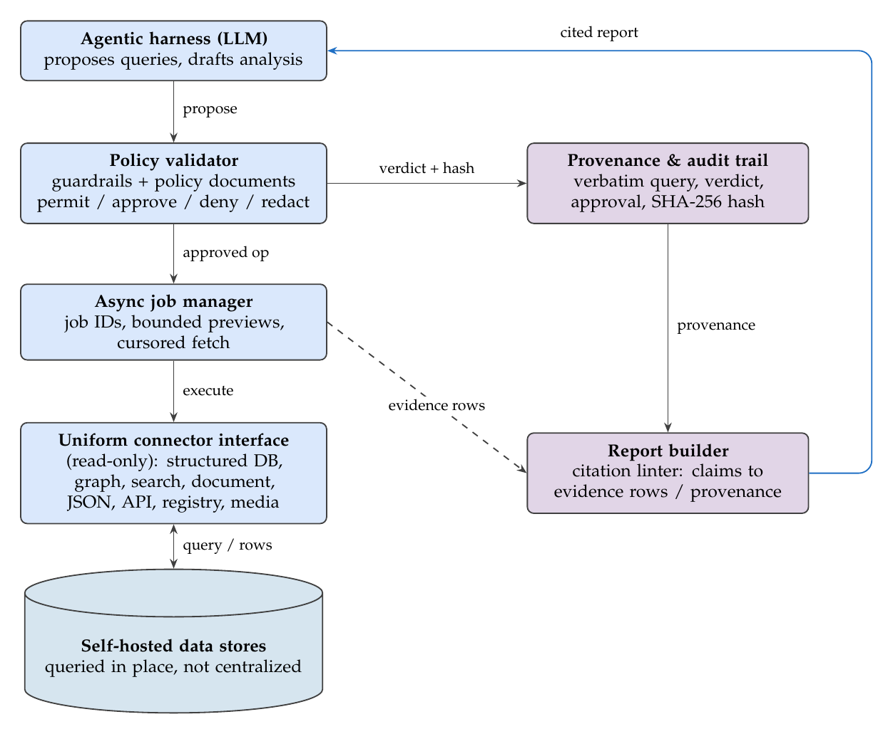
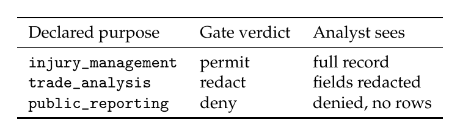
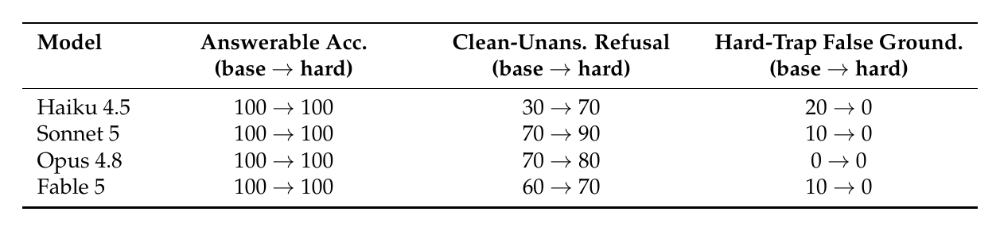
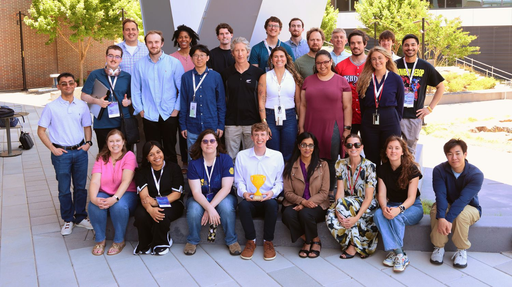

makesense
SCADS 2026 - Laboratory for Analytic Sciences at NC State
How do you let an AI agent work across an analyst's data without losing control of what it sees and does?
The why
Intelligence analysts rarely find everything they need about a person, team, or organization in one system. The evidence is spread across graph databases, tables, search indexes, and documents, each with its own identifiers. As a result, the analyst ends up doing the integration by hand and carrying names and partial conclusions from one tool to the next.
At the start of the project we surveyed six working analysts. They reported touching anywhere from 4 to 20 systems in a typical entity workup, and some estimated that up to 60% of that time went to navigating between tools rather than analyzing. Every one of them said they would only trust an AI finding if they could trace it back to the original source.
AI agents could take on much of this navigation work for the analyst. However, in need-to-know environments, an agent that hallucinates, hides its reasoning, or retrieves data the analyst is not cleared to access may introduce more risks than it mitigates. SCADS 2026 was organized around how AI can play an active and trustworthy role in analyst workflows, and makesense was our team’s response to that question.
What we did
makesense is a server that sits between an AI agent and the data stores an analyst works with. The agent can propose queries and draft analyses, but the server determines which queries are actually executed. Each query is checked against policy before it accesses any data, approved queries are run read-only against the stores where the data already resides, and every step is logged. When the agent writes a report, each claim must be linked to the evidence it was drawn from.

The analyst’s declared purpose is incorporated into the policy itself. In one test, the same analyst submitted the same query on the same medical record three times, and only the stated purpose was changed:

We tested everything in a stand-in environment built from public baseball data and a fictional team organization. Baseball stats can be checked against known answers, which let us see exactly when the system got something wrong without using any sensitive data.
The evaluation had three parts: the analyst survey plus three think-aloud sessions, where first-time users explored the data and built a report; a set of attacks and access tests aimed at the governance layer; and a 46-question bank, weighted toward questions the source document couldn't answer, run across four AI models to see when each one would decline and when it would make something up.
What we found
Governance held across models
Before we hardened the policy rules, our red-team tests got sensitive salary data out of the system 75% of the time. Afterward, they got nothing. Across 120 governed sessions using four different AI models there were zero policy leaks, and a sweep of 2,010 live requests turned up no unauthorized disclosures. Switching models changed the quality of the analysis, but it never changed what an analyst was allowed to see.
Model errors came from calibration
When we took the source document away entirely, the models declined to answer about 98% of the time. The errors showed up in a harder case, where the document was there but didn't contain the answer. Weaker models would grab a nearby value that looked right and cite the document for it, which is exactly the kind of mistake an analyst checking citations would miss.
Adding a short instruction to the system prompt (answer only from the designated document, and say so when it doesn't contain the answer) brought that false grounding to zero for all four models without hurting accuracy on questions that did have answers.

What analysts asked for
The think-aloud sessions identified issues that our automated tests did not. One analyst paused partway through an investigation to ask, “Where’s my sourcing?” They wanted to verify a lead before pursuing it further, but sources were not available until the final report. Analysts also wanted their original question preserved in the record, rather than only the database query it was translated into, and it was not always clear to them that the agent was answering from the connected data rather than from the model’s prior knowledge. When an approval prompt did appear, one participant selected “Allow once” mostly to see what would happen.
Two participants reported that the opening list of makesense’s capabilities made them feel constrained, so the tool now opens with the data and an open-ended question instead.
Why it matters
In human-automation research, suboptimal reliance takes two forms: misuse (overreliance), in which people trust output they have not verified, and disuse (underutilization), in which people ignore a tool that performs well. The goal is calibrated reliance that matches the system’s actual capability, and that depends on people being able to see what the system did and why.
makesense showed that the components needed for this kind of oversight can be built and that they hold up under testing. However, the sessions also showed how easily an approval step can appear to provide oversight without actually functioning as oversight. If a user selects “Allow once” without understanding what it means, or an approval request is buried in a chat message, the analyst has not truly made a decision. For me, this is the human factors problem worth pursuing next: the approval and provenance components of these systems should be designed and tested with the same care as the code behind them.
My role
I was first author on the technical report and led the human factors and UX side of the project. I designed the approval flow, built the multi-model evaluation harness, and ran the guardrail experiments. I also designed a within-subjects study protocol for comparing makesense against manual multi-system workflows, using NASA-TLX, Trust in Automation, SUS, and a seeded-error test for automation bias. On the engineering side, I added full-text PDF retrieval, fixed a disk-budget performance bottleneck, and got continuous integration running on Windows.

Read the full report
Padilla, J. G., Barea, A., Johnson, B., & Tarosky, J. (2026). makesense: A governed offline interface for multi-source intelligence sensemaking. SCADS 2026 Technical Report, Laboratory for Analytic Sciences, North Carolina State University.